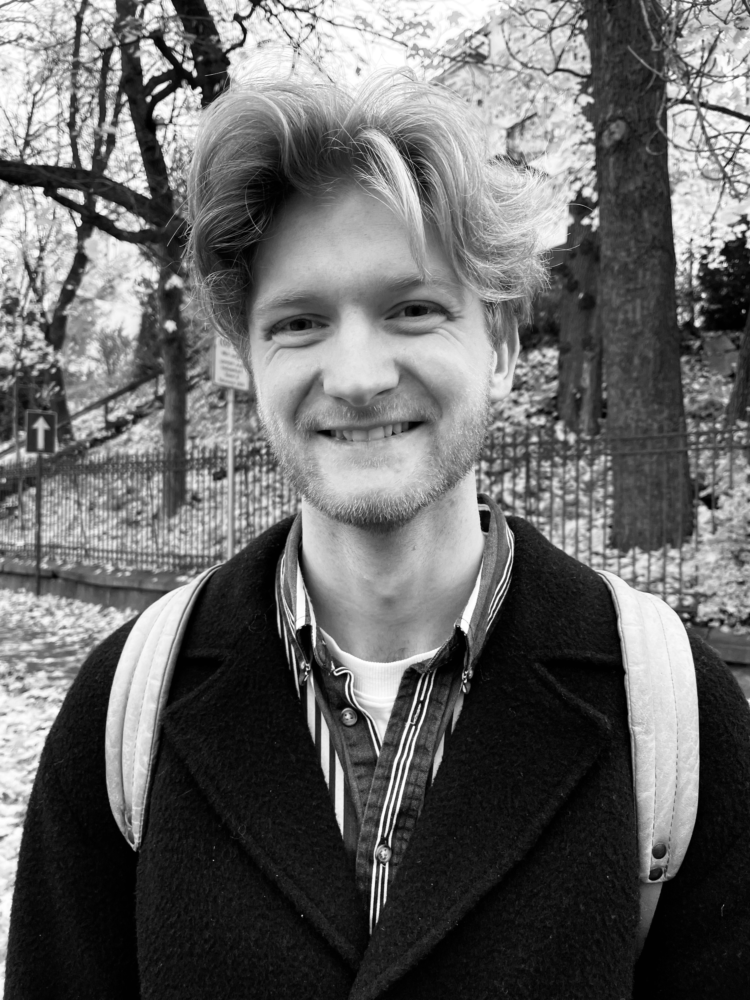

Music is not something you learn from a book, but something you find in the space between two people and an instrument.
Biography
Herman Gautefall Olsson was born on November 3rd, 1998 in Kristiansand, Norway, into a home where music was never far away. Not because anyone in the family were musicians, but because music was simply always there — in the atmosphere, in the everyday. At eleven, he picked up the violin. Two years later he switched to viola, and it was in the classical orchestra that music first took on real weight. A concert with the Kristiansand Symphony Orchestra left an early mark: music wasn't something you practised alone at home. It was something that happened between people, in a room, in a moment.
But the piano was waiting.
When his fingers found the keys, they quickly found their way to jazz and blues. Genres that refused to be contained, that always had more to say. At the University of Agder he studied under Jan Gunnar Hoff, one of Norway's foremost jazz pianists, and something opened up. Not just technically, but musically. An understanding that improvisation is not the absence of structure, but a presence in what is happening right now.
In 2019 he took that with him to Rome. The exchange year at Saint Louis College of Music became more than studies. He performed concerts with Italian songwriter Walter No and Polish artist Łukasz Wolski, met musicians from around the world, and let the city seep into his music. Some of what he brought home is difficult to put into words. But you can hear it.
After completing his Master's degree in Music Business and Management in 2022, he moved to Oslo. There he began writing film music for Prague-based Studio Fontana, releasing the production albums Winter's Embrace — Sagas of Love and War and Valhalla — Viking Cinematic Underscores, music now used in film, TV and radio worldwide. It is work that demands something different from live performance: patience, precision and the ability to write for stories you never see the end of.
Yet it is live where he is most himself. As pianist for pop artist Sofie Fjellvang, jazz and soul artist Celine Berstad and jazz band The Daisy Sisters, he has performed on stages from Kilden Concert Hall to the Kardamili International Jazz Festival in Greece, from Kongsberg Jazz Festival to the hotel stages of Oslo. He also holds regular solo evenings where the music speaks for itself. Just piano, just space, just listening.
The musicians he carries with him are many, but some always return: the stillness of Bill Evans, the nerve of Keith Jarrett, the Nordic melancholy of Jan Johansson, Ennio Morricone's ability to let a single note mean everything and Joni Mitchell's courage to let words and melody become one.
Today he also runs Løkken Music School in Oslo, a school built on the same belief that has stayed with him since childhood: that music is not something you learn from a book, but something you find in the space between two people and an instrument.